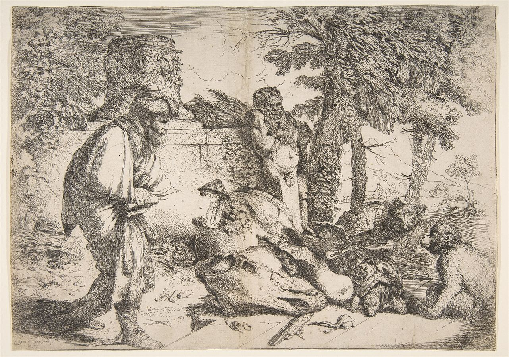

τί ἐστι;Jacob Jordaens, Diogenes Searching for an Honest Man
Your diagram, rebuilt from Fine's Introduction — where every scholar actually stands
Fine states them as "closely related" but separate Intro pp. 2–3.
Fine's enumeration, verbatim in substance Intro pp. 3–5. Attackers on the left, Fine on the right — exactly your layout.
Irwin and Nozick attack different solutions, from opposite directions. Irwin thinks Socrates has less than Vlastos says; Nozick thinks he needs more than Fine says. They are not allies.
(5) closes the elenchus problem. Nothing on the list closes the disavowal problem — which is why Ap. 29b keeps coming back, and why Irwin spent eighteen years finding a reading of it PE 29.
This is where the choice actually costs you something.
One problem, split in two → five solutions on offer → Vlastos takes (4) for the disavowal and (5) for the elenchus → Irwin strikes (4) and keeps (5) → Nozick strikes (5) and demands knowledge → Fine keeps (5), rules it "entirely satisfactory" for the elenchus, and admits Ap. 29b still leaves the disavowal open.
The one thing your sketch got exactly right: everything downstream of the top box is scholars arguing about a menu, not Plato saying anything. That is why the Forms come in as an explanation of the menu, not as a step on it.